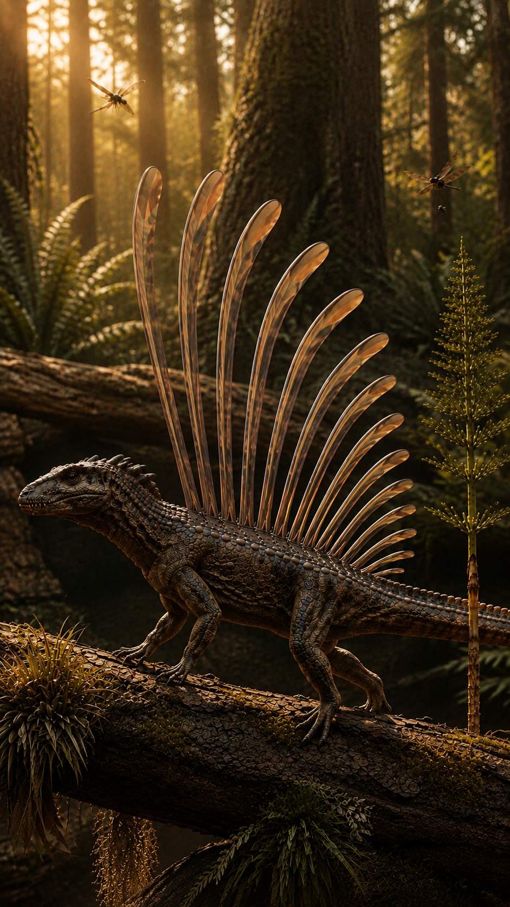
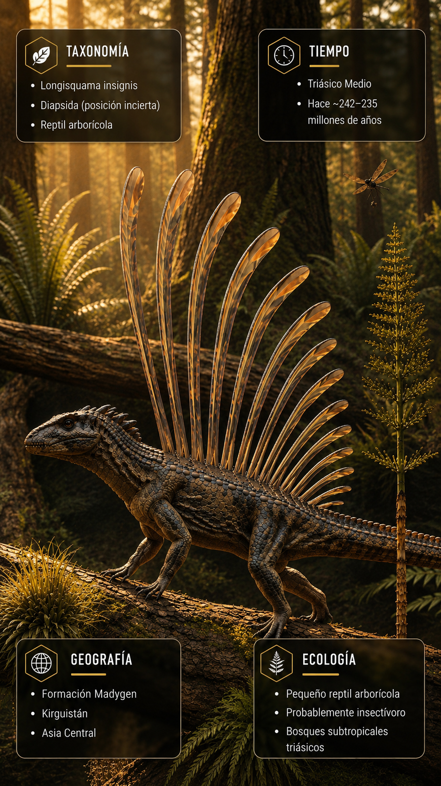
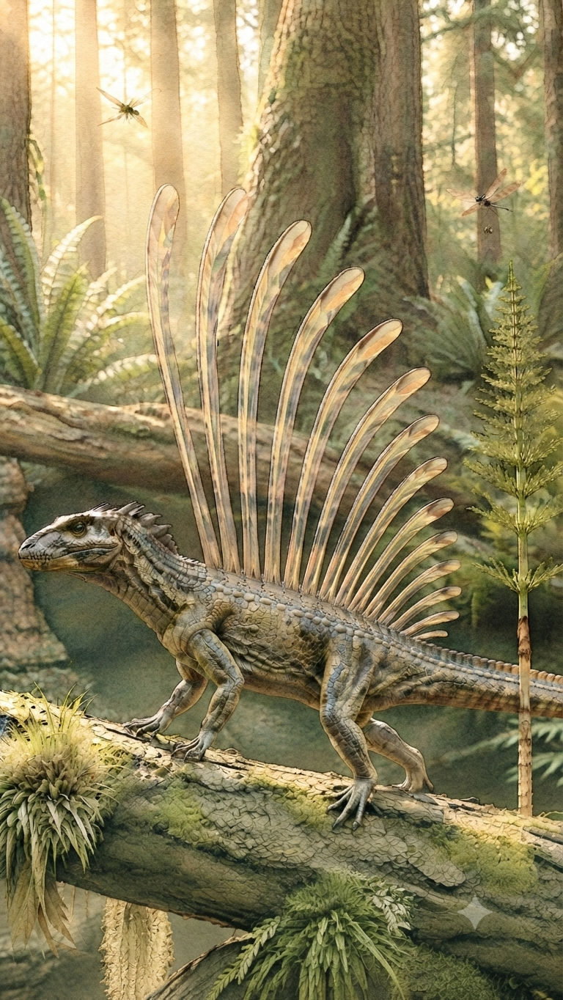
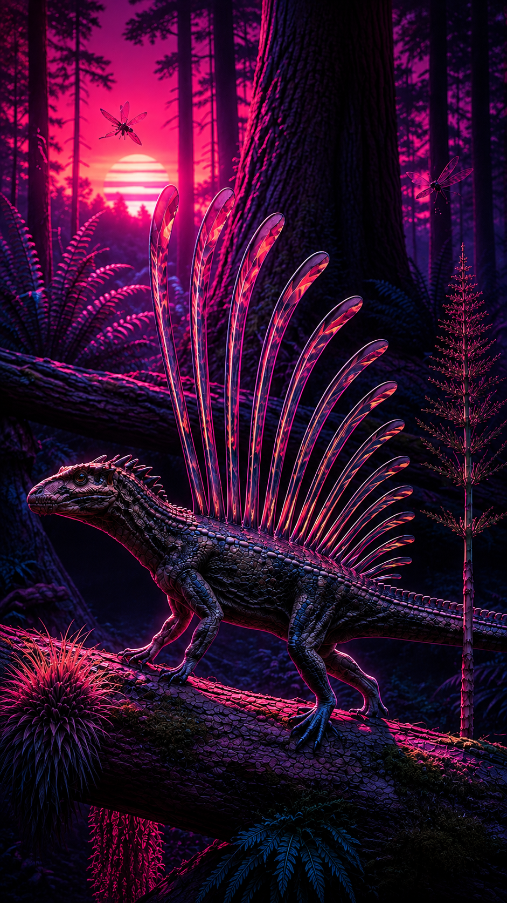

Paleoficha 005_15 de PalEntropía

▶ Haz clic sobre la imagen para ver el Short oficial en YouTube.



TAXÓN: Longisquama
CLADO: Sauropsida / Diapsida / Archosauromorpha (posición filogenética debatida)
DIETA: Insectívoro. Probablemente se alimentaba de insectos y otros pequeños artrópodos capturados entre la vegetación gracias a su agilidad y reducido tamaño corporal.
TAMAÑO: Pequeño reptil de aproximadamente 10 a 15 cm de longitud corporal, sin incluir la longitud de sus característicos apéndices dorsales.
LOCOMOCIÓN: Terrestre y arborícola. Sus extremidades ligeras y dedos provistos de garras sugieren que podía trepar con facilidad por troncos y ramas, desplazándose también sobre el suelo del bosque.
TIEMPO: Triásico Medio (aproximadamente hace 235 millones de años).
GEOGRAFÍA: Actual Kirguistán, donde fue descubierto en la Formación Madygen, uno de los yacimientos triásicos más importantes de Asia Central.
EQUIVALENCIA PALEOGEOGRÁFICA: Habitó el supercontinente Pangea durante el Triásico Medio, cuando amplias regiones continentales presentaban climas cálidos y estacionales con extensos bosques y sistemas fluviales.
AMBIENTE PALEOECOLÓGICO: Bosques subtropicales próximos a lagos y cursos fluviales, con abundante vegetación formada por coníferas, helechos, equisetos y plantas gimnospermas que ofrecían refugio a numerosos pequeños vertebrados e insectos.
ECOLOGÍA:
- Fauna secundaria: Sharovipteryx, Macrocnemus, insectos, pequeños anfibios, reptiles diápsidos y otros vertebrados característicos de la fauna de la Formación Madygen.
- Nicho ecológico: Pequeño insectívoro arborícola que probablemente desempeñaba un importante papel en el control de poblaciones de artrópodos dentro de los ecosistemas forestales triásicos.
- Relaciones: Es especialmente conocido por sus extraordinarios apéndices dorsales, cuya función continúa siendo objeto de debate científico, habiéndose propuesto hipótesis relacionadas con la exhibición, la comunicación, el camuflaje o la regulación térmica.
ANATOMÍA DESTACADA: Presentaba un cuerpo esbelto, una larga cola y una serie de apéndices dorsales alargados con forma de pluma que constituyen una de las estructuras más singulares conocidas entre los reptiles fósiles del Triásico.
CLIMA: Cálido y estacional, con periodos húmedos asociados a sistemas lacustres y fluviales alternados con fases relativamente secas propias del interior de Pangea.
ESTADO ECOLÓGICO: Extinto. Solo se conoce por fósiles del Triásico Medio y no dejó descendientes directos conocidos.